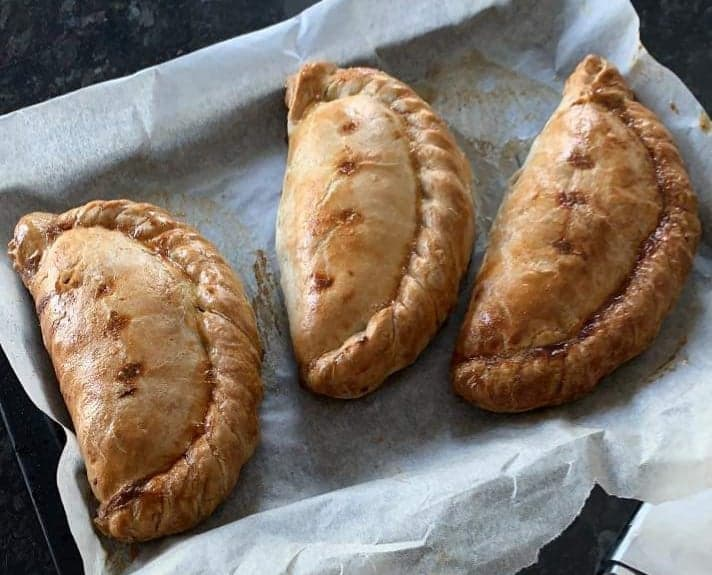

How to make an 'ansome Cornish Pasty

Description
Listen 'ere then pard, this is a Cornish pasty. Ain't nothing more 'ansome than a Cornish pasty.
I tell 'e, it's bleddy lovely.
Ingredients
- Shortcrust pastry
- Beef skirt
- 2x Potato
- 2x Swede
- 1x White onion
Step by step guide
- Roll out your pastry until it is a rough circular shape.
- Dice up your veg and beef skirt.
- Add a thin layer of butter to the surface of the pastry, then add your filling on top.
- Season with salt and black pepper.
- Pull one side of your pastry over the filling to the other side, and crimp the edges (like a proper Cornish person would).
- Cut a small slit in the top of the pasty, then brush with eggwash.
- Cook your Cornish pasty in a pre-heated oven for 45-50 minutes.
Walah, you have proper Cornish Pasty!